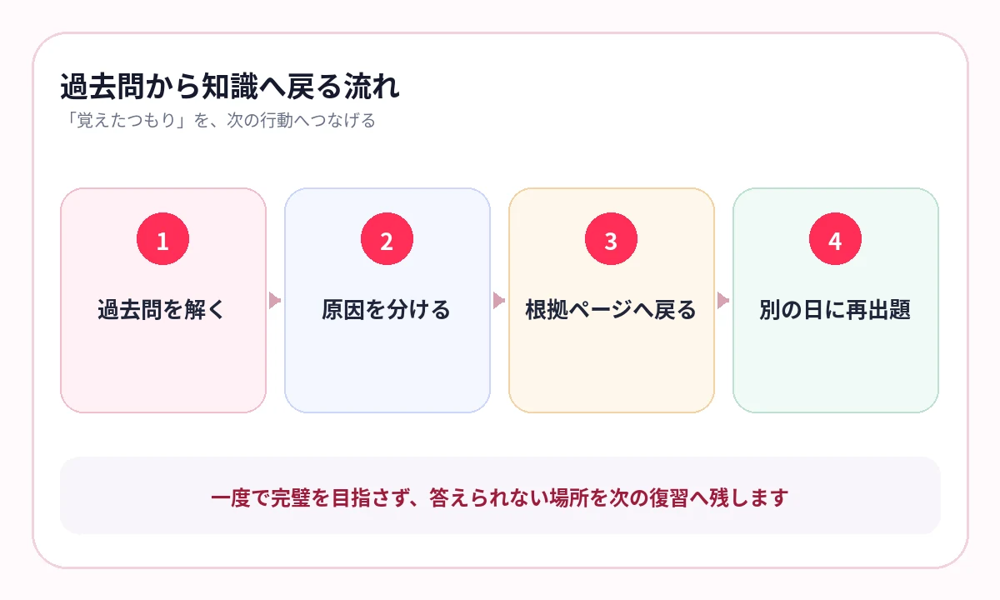
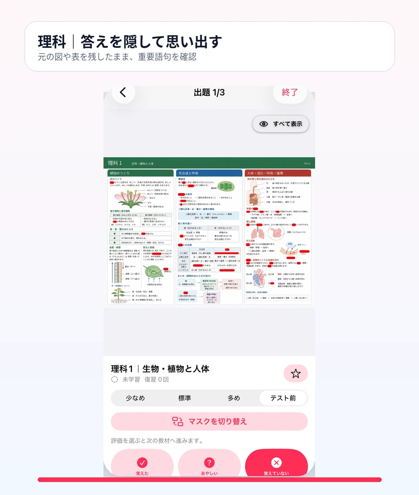

用語集では答えられるのに、資料問題や正誤問題になると迷う。そんな状態になっていませんか？
大学受験の暗記科目では、単語を知っているだけでなく、資料や文章の中から必要な知識を取り出す力が求められます。
日本史・世界史なら時代背景と因果関係、生物なら構造と働き、公共なら概念と現実の課題。用語を周辺知識と結び、別の形で問われても答えられる状態を作ります。
共通テストも個別試験も、知識を使って考える
大学入学共通テストの問題作成方針でも、歴史や公民では、学んだ知識を資料と関連付けて考察する力が重視されています。生物も、用語だけでなく、実験や資料の読解へ知識を使います。
暗記はゴールではありません。資料を読み解くために、必要な知識をすぐ取り出す準備です。
日本史・世界史は、用語を4方向へつなぐ
- いつ・どの地域か
- 何が原因だったか
- 何が変化したか
- 同時期の別地域で何が起きたか
人物名や条約名を一問一答で覚えた後、年表、地図、史料、制度の比較表へ戻ります。ページのレイアウトを残すと、用語の位置づけを確認しやすくなります。
{kind=link}

生物は、名称を「過程」に戻す
生物では、器官名、物質名、反応名を個別に覚えるだけでは、実験考察で使いにくくなります。
構造
図のどこにあり、何とつながっているかを確認します。
働き
何を受け取り、何を変え、何を出すのかを答えます。
条件
どの条件で増減し、結果がどう変わるかを確認します。
図や反応経路の上で語句を隠すと、名称と流れを同時に思い出せます。
横にスワイプして画像を確認できます
{kind=link}


過去問の誤答を、知識のページへ戻す
過去問を解く
誤答を知識不足・資料読解・論理・時間に分けます。
知識不足を特定
教科書や資料集の根拠ページへ戻ります。
答えを隠す
根拠となる用語、図、流れを見ないで答えます。
別の日に再出題
同じページを時間を空けて出し、取り出せるか確認します。
過去問は点数を測るだけでなく、次に復習するページを教える教材です。
科目を横断して、弱点だけを回す
AI暗記シートでは、写真、PDF、複数ページから教材を作り、科目・単元名でライブラリへ保存できます。日本史、世界史、生物などをまとめて出題し、弱点を優先して復習できます。
参考書を1周するたびに最初へ戻るのではなく、過去問や模試で「あやしい」と分かったページを薄くしていきます。
よくある質問
一問一答だけでは不十分ですか？
用語を素早く取り出す練習には有効です。その後、年表、地図、史料、図解、過去問の中で使えるかを確認します。
資料集のページも暗記に使えますか？
はい。図表や年表のレイアウトを残したまま語句を隠すと、位置関係や流れと一緒に確認できます。
過去問はいつから使うべきですか？
全範囲完成後だけでなく、単元学習後の確認にも使えます。誤答を分類し、知識不足だけを教材へ戻すことが重要です。
参考情報
試験範囲・制度は公式情報、復習方法は学習科学の研究を参照しています。
用語集を、過去問へつながる復習に
資料と一緒に、知識を取り出す
教科書・資料集・PDFの重要語句を隠して出題。過去問で見つかった弱点を、科目をまたいで繰り返せます。
iPhone・iPad対応／3枚まで無料保存／継続利用は800円の買い切り